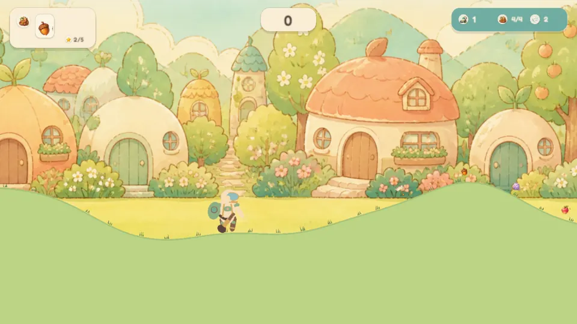

ভ্যাকুয়াম ও ছোড়া
BlastBlast! যেখানে নিভানোর যন্ত্রে পাম্প করে ছাড়ে, Vacuum Shot সেখানে একটি প্রপস তুলে নির্দিষ্ট শক্তিতে ছোড়ে, তাই আপনার বাছা প্রপসই শট ঠিক করে।
প্রপস ভ্যাকুয়াম করুন। ছুড়ুন। ওড়ুন।
একটি প্রপসে ট্যাপ করে ভ্যাকুয়ামের ব্যাগে টানুন, রিকয়েলের জন্য ছুড়ুন, তারপর নরমভাবে নামুন যাতে স্কোর চেইন চলতে থাকে। বাগানের পথ কখনো শেষ হয় না।
Unity প্রজেক্টে একটি ভ্যাকুয়াম, 39টি প্রপস, একটি অন্তহীন পথ ও একটি আপগ্রেড প্যানেল আছে, স্বয়ংক্রিয় টেস্টসহ। অডিও ও ডিভাইস বিল্ড এখনও আসেনি।
তৃণভূমি বা আকাশের একটি প্রপসে ট্যাপ করে সেটি ব্যাগে টানুন। ব্যাগে একটি আইটেম ধরে, আর এর শক্তির রেটিং দেখায় শটে কী হবে।
অন্য যেকোনো জায়গায় ট্যাপ করলে নির্দিষ্ট শক্তিতে আইটেম ছোড়া হয়। রিকয়েল পাইলটকে সামনে ও ওপরে ছোড়ে, শটের মধ্যে এক সেকেন্ড বিরতি আর প্রতি উড়াল দুটি এয়ার কারেকশন।
স্থির ল্যান্ডিং আপনার এয়ার শট পুনরায় ভরে এবং গ্রেড অনুযায়ী স্কোর দেয়। নিয়ন্ত্রিত ল্যান্ডিং পরপর হলে বোনাস বাড়ে।
BlastBlast! যেখানে নিভানোর যন্ত্রে পাম্প করে ছাড়ে, Vacuum Shot সেখানে একটি প্রপস তুলে নির্দিষ্ট শক্তিতে ছোড়ে, তাই আপনার বাছা প্রপসই শট ঠিক করে।
এয়ার কারেকশন, ব্যালেন্সড, সফট ল্যান্ডিং, ফরওয়ার্ড ড্যাশ ও ভার্টিক্যাল লিফট প্রপসের প্রতিটিতে POWER 1/5 থেকে 5/5 রেটিং দেখানো হয়। এর মধ্যে দশটি সংগ্রহ না করা পর্যন্ত বাতাসে ভাসে।
ল্যান্ডিংয়ের জন্য প্রায় সিকি সেকেন্ডের স্থির স্পর্শ লাগে। এটি Perfect, Safe বা Rough হিসেবে গ্রেড হয়, আর পরপর নিয়ন্ত্রিত ল্যান্ডিং সর্বোচ্চ আটটি পর্যন্ত চেইন গড়ে তোলে।
বাধাহীন ঢেউখেলানো পাহাড় ও উপত্যকা নিয়ে পথ, আর উঁচুতে উড়লে বাগান উচ্চতর আকাশে মিলিয়ে যায়।
দুটি আপগ্রেড শাখা, Motor ও Bag, লেভেল 4 পর্যন্ত যায় এবং Dew দিয়ে কেনা হয়। প্রতিটি ভ্যাকুয়ামের অগ্রগতি আলাদাভাবে সংরক্ষিত হয়।
লঞ্চ, ল্যান্ডিং, ক্যামেরা ও প্রগ্রেশনের নিয়মে EditMode টেস্ট আছে, আর দৃশ্য ও ফিজিক্সের আচরণে PlayMode টেস্ট আছে।
এখনও প্রকাশের তারিখ নেই। এগুলো প্রজেক্টের লক্ষ্য, প্রতিশ্রুতি নয়।
Unity প্রজেক্টের ইন-ইঞ্জিন ক্যাপচার, সঙ্গে সংগ্রহযোগ্য প্রপসের একটি শিট।



একটি অন্তহীন রিকয়েল-ফ্লাইট আর্কেড গেম। আপনি প্রপস ভ্যাকুয়াম করেন, সেগুলো ছুড়ে পাইলটকে সামনে ছোটান, আর নরমভাবে নেমে স্কোর চেইন গড়েন। এটি স্টুডিওর একই ভিত্তির ওপর তৈরি BlastBlast!, একটি প্যাস্টেল বাগান সহ, নিভানোর যন্ত্রের বদলে একটি ভ্যাকুয়াম এবং প্রপস যেগুলো প্রতিটি শটের শক্তি ঠিক করে।
এটি Android ও iOS-এর লক্ষ্যে একটি ভার্টিক্যাল স্লাইস। ডিভাইস প্রোফাইলিং, চূড়ান্ত অডিও ও সাইন করা বিল্ড এখনও বাকি, আর এখনও কোনো পাবলিক বিল্ড, স্টোর পেজ বা প্রকাশের তারিখ নেই।
Vacuum Shot তৈরি করেছে WillowinWorlds, একটি স্বাধীন মোবাইল গেম স্টুডিও (দেখুন এর প্রধান গেমসমূহ). এই পেজের লিংক করা সোশ্যাল চ্যানেলে WillowinWorlds-কে ফলো করুন, অথবা ইমেল করুন willowinworlds@gmail.com Vacuum Shot-এর আপডেট জানতে।
ভোটদান স্টুডিওর চ্যানেলে খুলবে। WillowinWorlds-কে ফলো করুন এবং যোগ দিন।